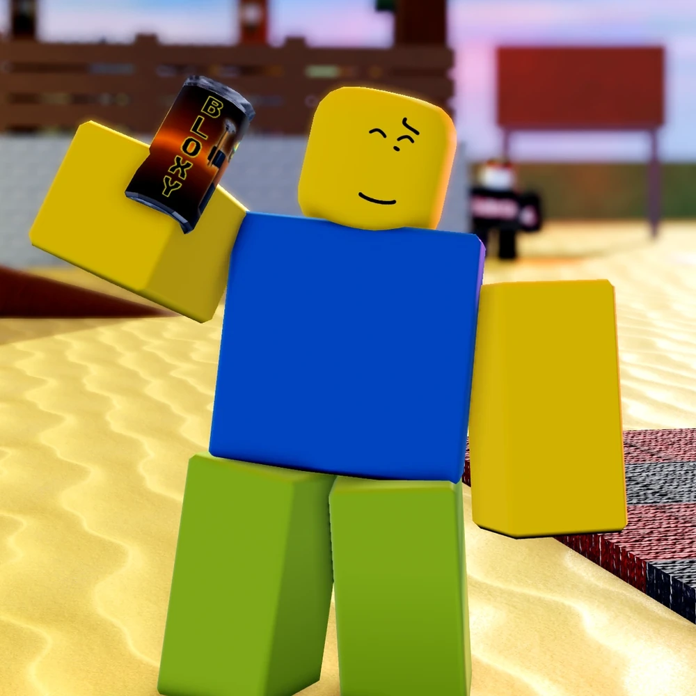

Stats
Difficulty:
Health:
100
Sprint:
26
Stamina:
100
Loss/sec:
10
Gain/sec:
20
Abilities

BLOXY COLA
Cooldown: 50sNoob drinks a can of Bloxy Cola for 2.5 seconds, during which they are unable to sprint and their movement speed is decreased by 10%. After finishing the drink, Noob is granted movement buffs and is cleansed of slowing effects.
The effects are as follows:- Grants Speed I for 10 seconds
- Removes all existing Slowness effects
- While drinking, Noob cannot sprint and moves 10% slower than normal
- Plays a boowomp sound effect
- Drinking a Bloxy Cola item will trigger this ability's cooldown
- Ability is treated as a Bloxy Cola item consumption for the purposes of Bloxy Cola speed
SLATESKIN POTION
Cooldown: 55sNoob drinks a bottle of Slateskin Potion for 1.5 seconds, during which they are unable to sprint and their movement speed is decreased by 40%, after fully drinking the Slateskin Potion, Noob gains some effects. The effects are as follows:
- Grants Slateskin II for 6 seconds
- Provides 80 overheal but reduces speed by 45%
- Can be recast after 2.5 seconds to remove the effect manually
- Can be recast after 2.5 seconds to remove the effect manually
- If Slateskin expires naturally, gives Speed II for 2 seconds
- If ended manually, gives Speed I instead

GHOST BURGER
Cooldown: 45sNoob eats a Ghostburger for about 2.2 seconds, granting powerful stealth effects for a short duration. The effects are as follows:
- Grants Undetectable I and Invisibility IV for 10 seconds
- Undetectable does not apply if Noob is the last Survivor standing
- While eating, Noob moves 40% slower and is unable to sprint